Assignment - Network Layer
Theoretical part
1.1. Network Layer Concepts
1.1.1. IP address
An IP address is a unique number that identifies a device (more precisely, a network interface) in a network. An IPv4 address has 32 bits and is written as four decimal numbers separated by dots, for example 192.168.1.10. It has two parts: the network part, which identifies the network, and the host part, which identifies the device inside that network.
1.1.2. Network subnets
A subnet is a smaller logical network created by dividing a bigger one. This is done by using some bits of the host part to identify the subnet. Subnetting reduces broadcast traffic, makes the network easier to organise and secure, and avoids wasting IP addresses.
1.1.3. Network classes
The original IPv4 design divided addresses into classes according to the first octet:
- Class A: 1–126, default mask 255.0.0.0 (/8), for very large networks.
- Class B: 128–191, default mask 255.255.0.0 (/16), for medium networks.
- Class C: 192–223, default mask 255.255.255.0 (/24), for small networks.
- Class D: 224–239, used for multicast.
- Class E: 240–255, reserved for experimental use.
The range 127.x.x.x is reserved for loopback. Today classes are mostly replaced by CIDR, which allows masks of any length.
1.1.4. Network mask
The network mask is a 32-bit number that shows which part of an IP address belongs to the network and which part belongs to the host. The network bits are set to 1 and the host bits to 0. For example, 255.255.255.0 (or /24) means that the first 24 bits are the network. A device applies the mask to an IP address to obtain its network address and to decide whether another device is in the same network.
1.1.5. Routing table
A routing table is a list of rules stored in a host or a router that tells it where to send each packet. Each entry contains a destination network, its mask, the next hop (gateway), the outgoing interface and a metric (cost). When a packet arrives, the device chooses the entry with the most specific match for the destination address.
1.1.6. Default gateway
The default gateway is the router that a device uses when the destination is not in its own network. It is the "exit door" to other networks, such as the Internet. In the routing table it appears as the default route 0.0.0.0/0.
1.1.7. Broadcast
A broadcast address is used to send a packet to all devices in a network at once. In a subnet it is the last address, where all host bits are 1. For example, in 192.168.1.0/24 the broadcast address is 192.168.1.255. The address 255.255.255.255 is the limited broadcast, which stays inside the local network.
1.1.8. Subnet address
The subnet address (or network address) identifies the subnet itself. It is the first address of the range, where all host bits are 0, for example 192.168.1.0 for the network 192.168.1.0/24. It cannot be assigned to a device.
1.1.9. Private network address
Private addresses are ranges reserved for internal networks that are not routed on the public Internet (RFC 1918):
- 10.0.0.0 – 10.255.255.255 (10.0.0.0/8)
- 172.16.0.0 – 172.31.255.255 (172.16.0.0/12)
- 192.168.0.0 – 192.168.255.255 (192.168.0.0/16)
Any organisation can use them freely, and the same addresses can be reused in many different private networks.
1.1.10. Network address translation
NAT is a technique used by routers to connect private networks to the Internet. The router replaces the private source address of outgoing packets with its own public address and stores the translation in a table. When the reply returns, it uses the table to send it to the correct internal device. In its most common form (PAT), it also changes the port number so many devices can share one public IP. NAT saves public IPv4 addresses and hides the internal structure of the network.
2. Practical part
2.1. Use ping, pathping, and tracert to the following hosts:
2.1.1. Computer in a local network
The tests were run against the default gateway of the Wi-Fi network, 10.128.0.1,
from the host 10.128.143.233 (mask 255.255.0.0). Both addresses are in the same
private /16 network, so the traffic never leaves the LAN.
- ping: 4 packets sent, 3 received, 1 lost (25% loss). Round-trip times were 2–11 ms (average 7 ms) and TTL=64, which is the usual initial value for Linux-based network devices.
- tracert: the destination is reached in a single hop (4 ms, 1 ms, 2 ms), confirming it is directly connected, with no intermediate routers.
- pathping: hop 0 is the local host and hop 1 is the gateway (RTT 20 ms). It reports 7% packet loss on the link between them, which matches the lost ping packet and suggests an unstable wireless link rather than a routing problem.
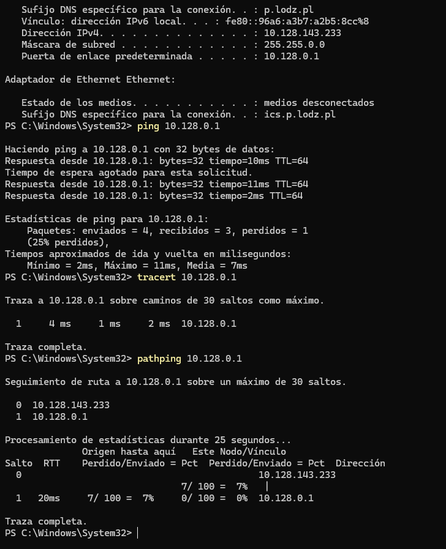
2.1.2. www.onet.pl
www.onet.pl is served through the Amazon CloudFront CDN, so DNS returns different addresses at different moments:
18.244.102.124 (ping), 18.244.102.79 (tracert) and 13.227.146.90 (pathping).
This is expected behaviour for a CDN and not an error.
- ping: 4/4 packets received, 0% loss. Times were 7–86 ms (average 33 ms), TTL=244 (initial value 255).
- tracert: 15 hops. Hops 9 and 11–14 show request timed out. This does not mean the route is broken: those routers simply do not answer ICMP/TTL-exceeded messages, since the final host is reached at hop 15 (
server-18-244-102-79.waw51.r.cloudfront.net). - pathping: over 200 seconds, hops 1–8 showed 0/100 packets lost (0%), with RTT between 46 ms and 104 ms. Beyond hop 8 (the PIONIER router) the statistics are not available because the following nodes do not reply.
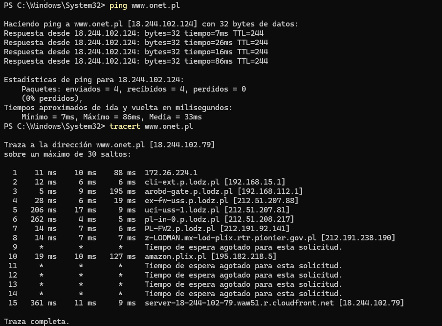
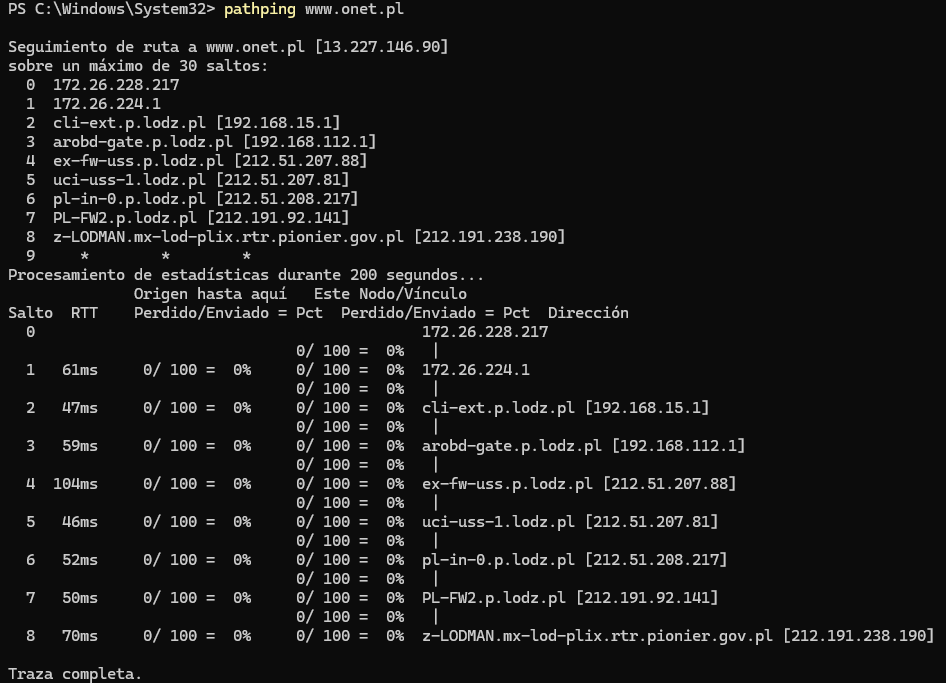
2.1.3. www.google.com
The host resolved to 142.251.150.119.
- ping: 4/4 packets received, 0% loss. Times were 11–246 ms (average 88 ms), TTL=115. The high maximum is an isolated delay spike, not packet loss.
- tracert: destination reached in 11 hops. Hops 1–3 are private addresses inside the university network, hops 4–8 are public addresses of the Lodz University of Technology and the academic/ISP backbone (
z-LODMANa.lodz.tpnet.pl), and hops 9–11 belong to the Google network. Some hops show isolated peaks (e.g. 572 ms at hop 3), which are caused by routers giving low priority to ICMP replies and do not affect the final result.
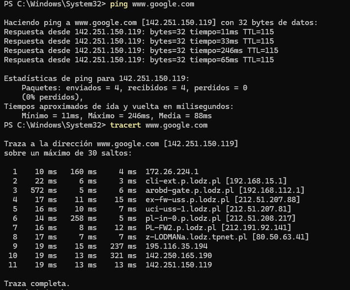
2.1.4. www.google.pl
The host resolved to 142.251.98.94 (nt-in-f94.1e100.net).
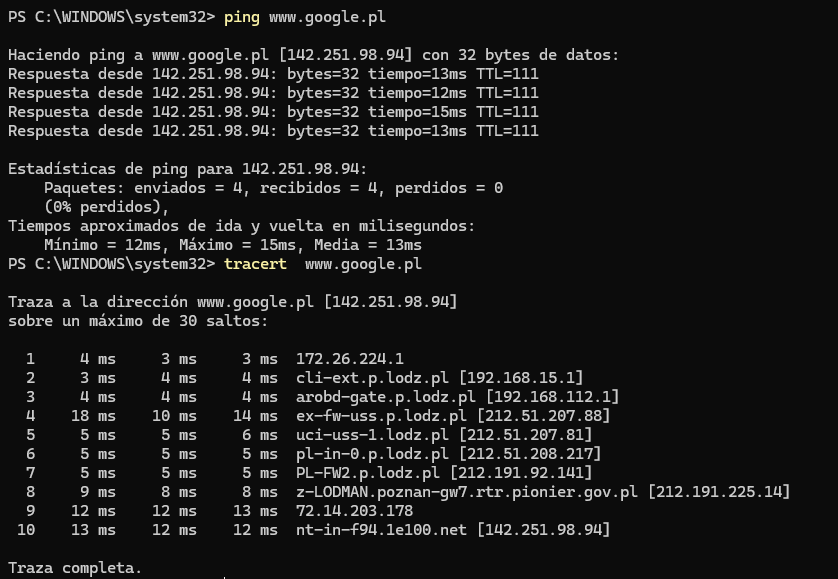
2.1.5. www.lodman.pl
The name www.lodman.pl resolved to 212.191.2.25 (proxy.man.lodz.pl).
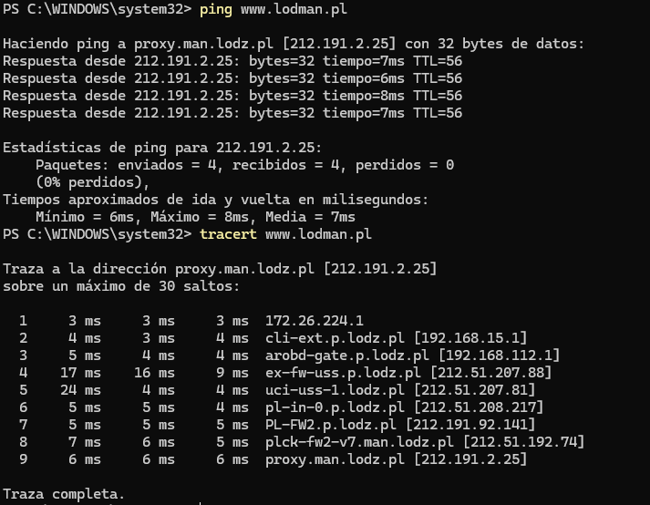
2.1.6. Identify the physical location of the above-mentioned servers (search for tools on the Internet).
I used the online IP geolocation tool WhatsmyIP.com
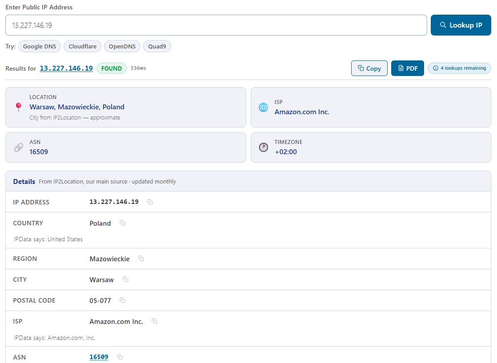
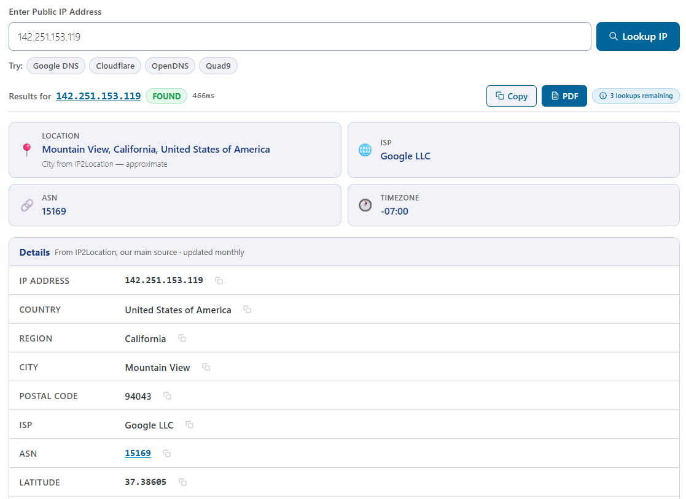
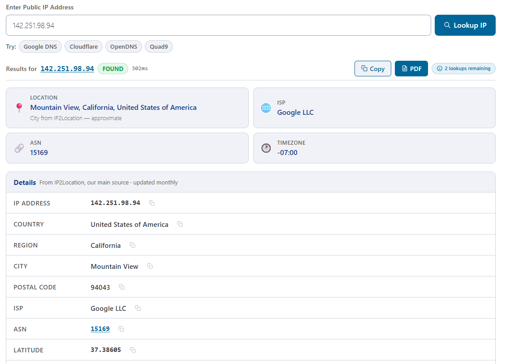
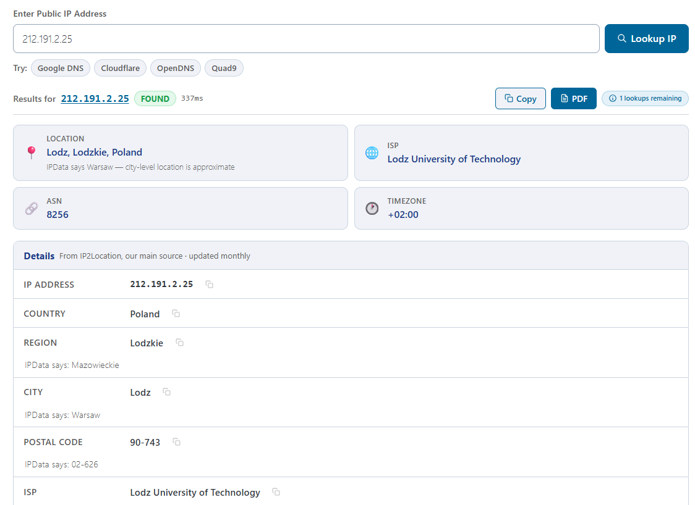
2.1.7. When using tracert, assign consecutive hops to private/public network addresses.
A private address is one that belongs to the ranges 10.x.x.x, 172.16.x.x–172.31.x.x or 192.168.x.x. These addresses are only used inside internal networks. Any other address is public and can be reached on the Internet.
Local network computer (10.128.0.1): the route has only 1 hop, the gateway 10.128.0.1, which is a private address. The traffic does not leave the local network.
For the other hosts, the first 7 hops are the same for www.onet.pl, www.google.com, www.google.pl and www.lodman.pl:
| Hop | Name | IP address | Type |
|---|---|---|---|
| 1 | – | 172.26.224.1 | Private |
| 2 | cli-ext.p.lodz.pl | 192.168.15.1 | Private |
| 3 | arobd-gate.p.lodz.pl | 192.168.112.1 | Private |
| 4 | ex-fw-uss.p.lodz.pl | 212.51.207.88 | Public |
| 5 | uci-uss-1.lodz.pl | 212.51.207.81 | Public |
| 6 | pl-in-0.p.lodz.pl | 212.51.208.217 | Public |
| 7 | PL-FW2.p.lodz.pl | 212.191.92.141 | Public |
After hop 7 the routes are different for each destination, but all the addresses that answer are public. Some hops of www.onet.pl do not answer (request timed out), so their address is unknown and they cannot be classified.
2.1.8. Check the IP address and physical address of your host using ipconfig.
The command ipconfig /all was used. The computer is connected to the network through the Wi-Fi adapter, so these are the values of that adapter:
- IP address:
10.128.143.233(private address, mask255.255.0.0) - Physical address (MAC):
14-B5-CD-03-4A-5F - Default gateway:
10.128.0.1
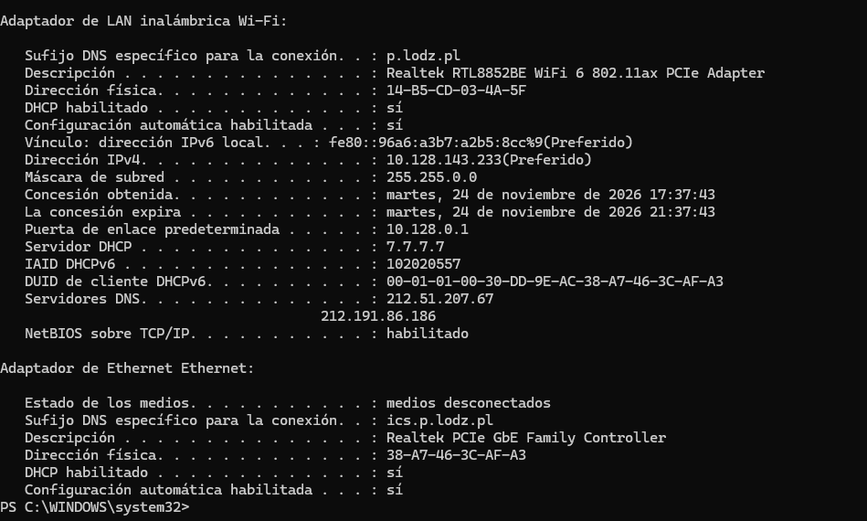